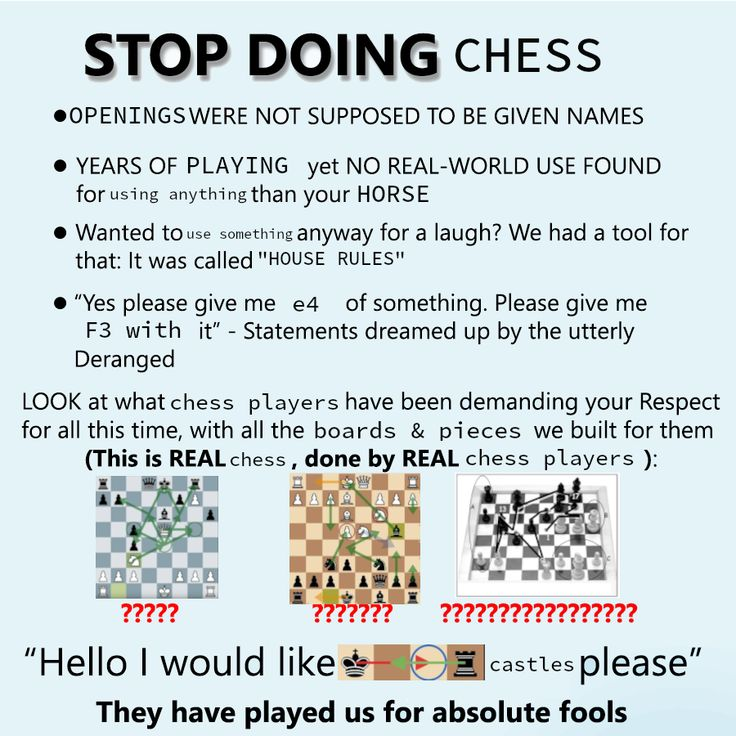

I have been spending some time playing chess with my dearest friend lately. I have never been a chess player ever since I was a kid; Always found it hard to pursue since There were always a lot of people that were pretty good at it. And it was always kinda not worth for me to pick up, even though I enjoyed it. Last night after a tough defeat, I started thinking, I remember as a 10th grader, I used to be nuts about combinatorics and the combinatorial questions and puzzles that I encountered that where about chess pieces and their movements on a grid. I really liked those questions and I wondered If there can be found an Algebraic Structure in the movement of chess pieces so I started abstractify.

I started out with my favourite piece, The Knight™.
Looking at the knight movement, assuming that a square that it wants to move to is not occupied and all 8 squares that a knight can reach are there, we can define the set of movements.
We know that a knight can either : - Move one square in some direction (U, D) or (+1, -1) and then move two squares in a direction (+2 or -2), - Move two square in some direction (L, R) or (+2, -2) and then move one square in a set direction(+1 or -1).
Let an element in this set be compromised of two parts as such : (p,q) Where p shows us the first part of the move and q shows us the second.
We would then have 4 + 4 elements, that is 8 elements in total :
{(+2, +1),(+2, -1),(-2, +1),(-2, -1),(+1, +2),(+1, -2),(-1, +2),(-1, -2)}
Now we can look for binary functions to use on this set and find some algebraic properties hopefully. One immediate function that comes to mind the addition of the coordinates, Like (-1, -2) + (+2, -1) = (+1, -3) So (+1, -3) is the square we land on if we start from the square with coords (-1, -2) and move (+2, -1).
If the chess board is infinite, turns our that this is function along with our set, describes a generator for (Z2, +), meaning we can traverse to all squares on an infinite chess board, and hence the group generated will be isomporphic to the integer lattice under vector addition.
Another fun composition could be looking at the parity of the moves that a knight makes.
f(x,y) = x + y mod 2
Well then, the parity of the coords change each time the knight moves, this seperates the board into two parts, and hence is a good combinatorial/algebraic way to understand how a knight-tour is possible/impossible on certain boards. Because what we are doing is basically treating the chess board as a bipartite graph and each time moving from an odd square to and even one or vice versa.
That’s it for today I guess.